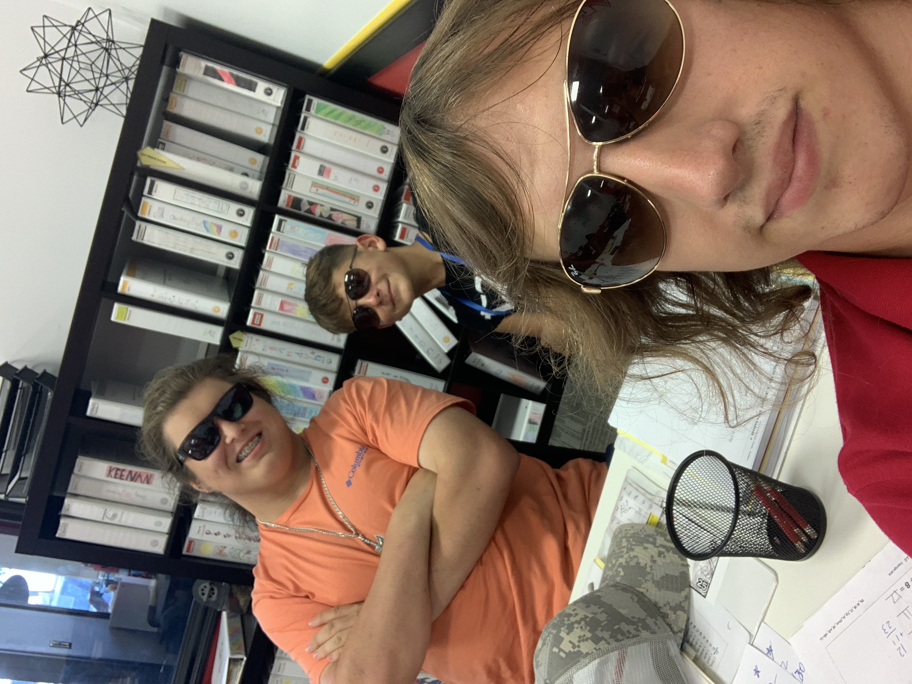

 Me with some of my Mathnasium students From March 2022 until July 2023 I worked as a math instructor for Mathnasium College Station. Since then this has been my favorie job that I have ever worked. I had an awesome center director, Aaron Willis (who is now the operations director), dependable and intellegent coworkers, and wonderful and unique students. Every work day I would show up fifteen minutes early to prepare my table, enthusiasticlly greet students as they walked into the center, and instruct them using the "Mathnasium Method". Working for Mathnasium turned out to be the perfect job to work while enrolled as a full time student because it only required eight to twelve hours of commitment every week and didn't require us to work on Firday and Saturday nights. I only left because I moved away from College Station after I graduated. I would still be working there part time if I could.
Durring the summer of 2020 and the summer of 2021 I delivered pizza for Dominos. I enjoyed this job because I worked at three seperate locations, one in League City, one in College Station, and one in Bran, and got to see how different managers ran the same buisness. It was easy money and was a great for when I was taking part time classes during the summer of 2021. 2020 and 2021 were perfect times to be a delivery driver too since more poeple were ordering delivery because of Covid-19. My favorite part of driving for dominos was leaving work everynight with cash from my tips and my mileage reimbursement. Working for dominos was a great experience for the short time I worked there.
After I graduated highschool I decided to get trained and work as a lifeguard for Gulf Coast Aquatics (GCA) during the summer of 2018. I decided to work as a lifeguard because my sister was already going to do it and also passing my lifeguard training guarunteed me a job with the company I trained with. I ended up making good money but more importantly I made some good friends while working for GCA one of which I am still close friends with. When I returned to work for GCA in the summer of 2019 I became a manager for one of the pools they guarded. The promotion came with a dollar and hour pay raise and the responsibility of scheduling the shifts for my pool. I was also responsible for how clean our pool was and for making sure my guards attended inservices for training, which I usually had the best turnout for. Lifeguarding was an excellent first job.
For my senior capstone class, CSCE 481, my team was tasked with coming up with a project that is a novel solution to an existing problem. We decided to help one of our teammate's sister in-law worked at Sunshine Cottage School For Deaf Children as a teacher. Our objective was to automate their language objective model, Cassls, which was a lot of cumbersome paperwork and lengthy analysis. In the Cassls system each student had a certain language skill level, such as preverbal, simple sentences, complex sentence, etc, and within those skill levels certain language objectives. During the school day the teacher will have independent and small group time with their students where they will talk with and observe students and write down sentences that they say. At the end of the day the teacher will spend time analyzing the sentences and determining the objectives that it shows off. For our project we decided to automate the simple sentences skill level. To do this we used the Python natrual language processing module Spacy. Spacy would take as input a sentence, preform part of speach analysis, form word dependency graphs, and add tags to each word such as plural or possessive. Using the output from spacy we were able to correctly identify 146 out of 160 language objectives. My main task was to use the output from spacy to Identify language objectives from the domains Nouns And Modifiers, Prepositions and Pronouns, and Verbs and Modals. Unfortunatly the project is no longer hosted on the web. If you want to view the project for yourself open a terminal and follow the instructions on the README here.
For my artificial intelegence class, CSCE 420, for assignment two we were tasked with individualy coding a command line tic-tac-toe board. The point of the assignment was to create an AI which utilized min-maxing and alpha beta prunning to determine the optimal next move for X or for O. The min-maxing part of the algorithm essentially starts with a moves, itterates every possible future move from there and gives it a score based on how likely you are to win if you make that particular move. The alpha beta prunning part of the project chooses to ignore paths that are going to have the same outcome, thus reducing the search space. You can download the executable by clicking here. To play the game: type "show" to show the board, "reset" to clear the board, "choose X" or "choose O" to utilize the minmake algorithm and place a peiece, "move P R C" where P is X or O, R is row A B or C, and C is collumn 1 2 or 3, "pruning" to show whether alpha beta prunning is on or off, "prunning on" to turn alpha bet prunning on, "prunning off" to turn off alpha beta prunning, and "quit" to end the game.